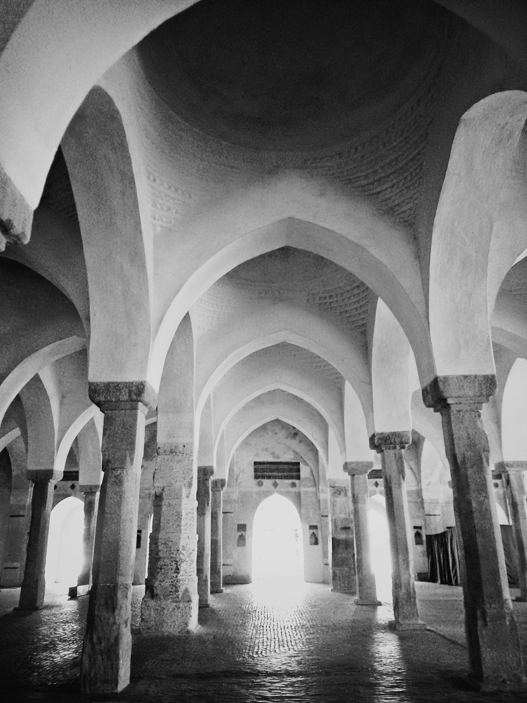
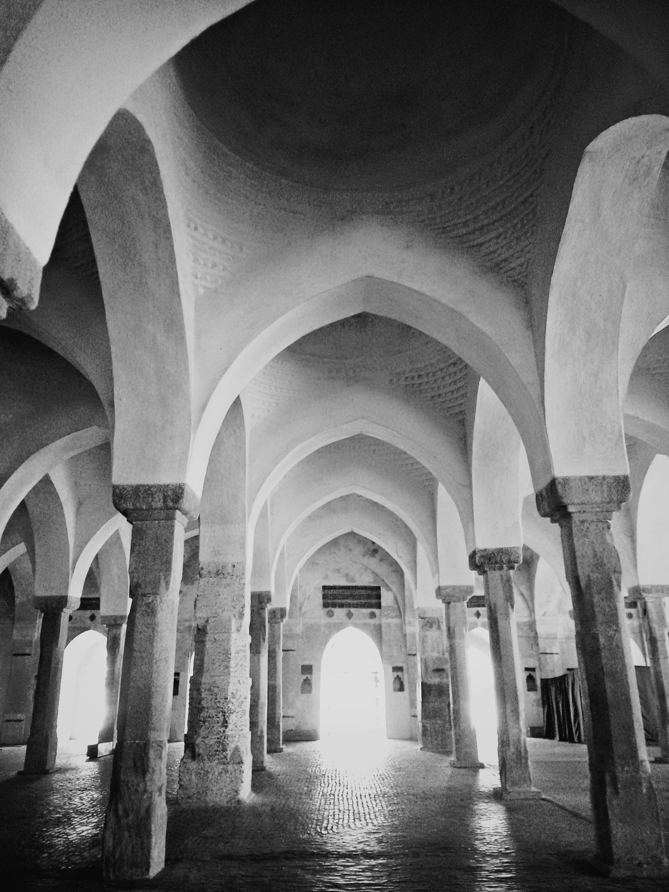

Popular Places

Cox's Bazer
Srimangal

Rangamati
St.Martin's Iland

Sundarbans
Popular Post
Best honeymoon destinations in Bangladesh that make you romantic trip last forever
20 amaizing Places to Visit in Bangladesh
10 Best Tree House Resorts in India nestled in the lap of nature
Follow Me


 
